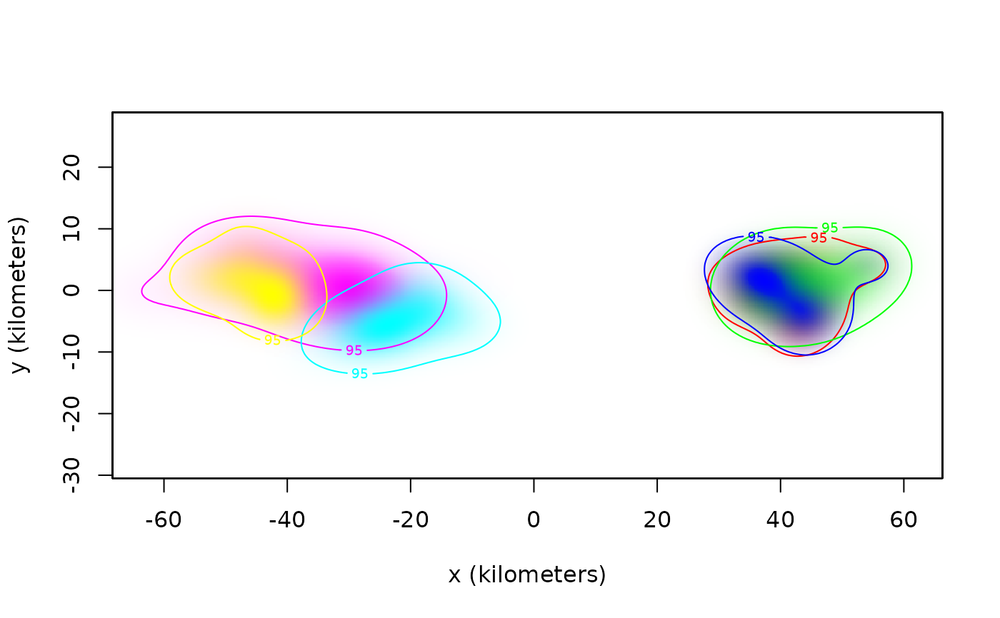
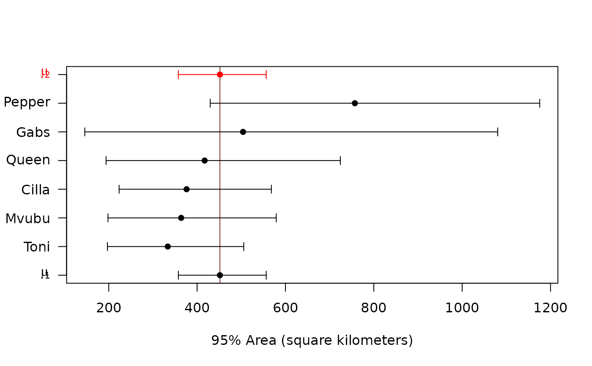

cluster.RdThese functions cluster and classify individual movement models and related estimates, including AKDE home-range areas, while taking into account estimation uncertainty.
cluster(x,level=0.95,level.UD=0.95,debias=TRUE,IC="BIC",units=TRUE,plot=TRUE,sort=FALSE, ...)
| x | A list of |
|---|---|
| level | Confidence level for parameter estimates. |
| level.UD | Coverage level for home-range estimates. E.g., 50% core home range. |
| debias | Apply Bessel's inverse-Gaussian correction and various other bias corrections. |
| IC | Information criterion to determine whether or not population variation can be estimated. Can be |
| units | Convert result to natural units. |
| plot | Generate a meta-analysis forest plot with two means. |
| sort | Sort individuals by their point estimates in forest plot. |
| ... | Further arguments passed to |
So-far only the clustering of home-range areas is implemented. More details will be provided in an upcomming manuscript.
A list with elements P and CI,
where P is an array of individual membership probabilities for sub-population 1,
and CI is a table with rows corresponding to the sub-population means, coefficients of variation, and membership probabilities, and the ratio of sub-population means.
C. H. Fleming.
The AICc formula is approximated via the Gaussian relation.
# \donttest{ # load package and data library(ctmm) data(buffalo) # fit movement models FITS <- AKDES <- list() for(i in 1:length(buffalo)) { GUESS <- ctmm.guess(buffalo[[i]],interactive=FALSE) # use ctmm.select unless you are certain that the selected model is OUF FITS[[i]] <- ctmm.fit(buffalo[[i]],GUESS,trace=2) }#>#>#>#>#>#>#>#>#>#>#>#>#>#>#>#>#>#>#>#>#>#>#>#>#>#>#>#>#>#>#>#>#>#>#>#># color to be spatially distinct COL <- color(AKDES,by='individual') # plot AKDEs plot(AKDES,col.DF=COL,col.level=COL,col.grid=NA,level=NA)# cluster-analysis of buffalo cluster(AKDES,sort=TRUE)#> ΔBIC #> Dirac-δ 0.0000000 #> inverse-Gaussian 0.9580283 #> Dirac-δ + Dirac-δ 1.3561665 #> inverse-Gaussian(CoV) + inverse-Gaussian(CoV) 3.1479259 #> inverse-Gaussian + Dirac-δ 3.1479259 #> Dirac-δ + inverse-Gaussian 3.1479259 #> inverse-Gaussian(CoV₁) + inverse-Gaussian(CoV₂) 4.9396854#> $P #> Cilla Gabs Mvubu Pepper Queen Toni #> 1 1 1 1 1 1 #> #> $CI #> low est high #> μ₁ (km²) 357.5927 451.6343 556.4885 #> CoV₁ 0.0000 0.0000 Inf #> μ₂ (km²) 357.5927 451.6343 556.4885 #> CoV₂ 0.0000 0.0000 Inf #> P₁ 0.0000 1.0000 1.0000 #> P₂ 0.0000 0.0000 1.0000 #> μ₂/μ₁ 0.0000 1.0000 Inf #># }